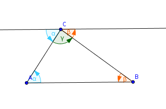
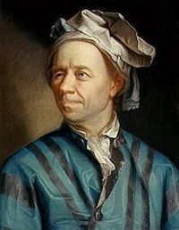
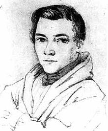
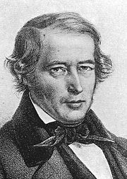
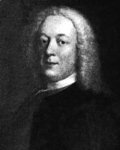
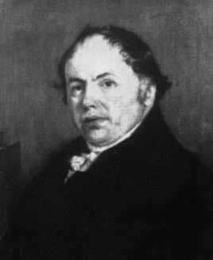

| Choisissez votre langue ! | Choose your language ! |
Mesures des côtés
Lengths of sides
propriété 1
Si ABC est un triangle chaque côté est, en longueur, inférieur à la somme des deux autres, et chaque côté est supérieur à la valeur absolue de la différence des deux autres.
property 1
If ABC is a triangle each side is, in length, less than the sum of the other two, and each side is greater than the absolute value of the difference of the other two.
BC ≤ BA+AC
BC ≥ |BA-AC|
C'est simplement la traduction en termes de distances d'un résultat sur les normes.
BC ≥ |BA-AC|
C'est simplement la traduction en termes de distances d'un résultat sur les normes.
Somme des angles
Nous rappelons ici un résultat simple vu dans . BC ≤ BA+AC
BC ≥ |BA-AC|
It is simply the translation in terms of distances of a result on the standards.
BC ≥ |BA-AC|
It is simply the translation in terms of distances of a result on the standards.
Sum of angles
We recall here a simple result seen in .propriété 2
Dans un triangle ABC la somme des trois angles 'intérieurs' a pour mesure π.
property 2
In a triangle ABC the sum of the three 'interior' angles has the measure π.

Familles de droites concourantes
Médianes
Nous rappelons un résultat vu dans .Families of concurrent lines
Medians
We recall a result seen in .propriété 3
Dans tout triangle les 3 médianes (joignant chaque sommet au milieu du côté opposé) sont concourantes en un point appelé
'centre de gravité'
du triangle. Ce point se trouve au 2/3 de chaque médiane à partir du sommet.
property 3
In any triangle, the 3 medians (joining each vertex to the middle of the opposite side) meet at a point called the
'center of gravity'
of the triangle. This point is at 2/3 of each median from the vertex.
Avec l'appliquette suivante vous pouvez déplacer les sommets du triangle.
With the following applet you can move the vertices of the triangle.
Médiatrices
Perpendicular bisectors
propriété 4
Dans tout triangle les 3 médiatrices des côtés sont concourantes en un point qui est centre d'un cercle passant par les 3 sommets (cercle
'circonscrit'
).
property 4
In any triangle, the 3 perpendicular bisectors of the sides are concurrent at a point which is the center (
circumcenter
) of a circle passing through the 3 vertices (
'circumscribed'
circle).
La démonstration se trouve dans .
Avec l'appliquette suivante vous pouvez déplacer les sommets du triangle avec la souris.
Avec l'appliquette suivante vous pouvez déplacer les sommets du triangle avec la souris.
The demonstration is in .
With the following applet you can move the vertices of the triangle.
With the following applet you can move the vertices of the triangle.
Hauteurs
Altitudes
propriété 5
Dans tout triangle les trois hauteurs sont concourantes en un point appelé '
orthocentre
'.
property 5
In any triangle the three altitudes are concurrent at a point called '
orthocenter
'.
La démonstration se trouve dans .
Avec l'appliquette suivante vous pouvez déplacer les sommets du triangle.
Avec l'appliquette suivante vous pouvez déplacer les sommets du triangle.
The demonstration is in .
With the following applet you can move the vertices of the triangle.
With the following applet you can move the vertices of the triangle.
Alors que le centre de gravité se trouve toujours situé à l'intérieur du triangle, le centre du cercle circonscrit et l'orthocentre peuvent se trouver à l'extérieur.
Il existe une relation entre les 3 points.
Il existe une relation entre les 3 points.
While the center of gravity is always located inside the triangle, the center of the circumcircle and the orthocenter can be outside.
There is a relationship between the 3 points.
There is a relationship between the 3 points.
propriété 6
Dans tout triangle, l'orthocentre H, le centre de gravité G et le centre du cercle circonscrit J sont alignés sur une droite appelée
'Droite d'Euler'
du triangle ABC. En outre G se trouve entre H et J au 1/3 sur le segment [JH] en partant de J.
property 6
In any triangle, the orthocenter H, the center of gravity G and the center of the circumscribed circle J are aligned on a line called
'Euler's line'
of the triangle ABC. Moreover G is between H and J at 1/3 on the segment [JH] starting from J.
En effet, l'homothétie de centre G et de rapport -2 transforme B' en B et J en H.
Bissectrices
Indeed, the dilation with center G and ratio -2 transforms B' into B and J into H.
Angle bisectors
propriété 7
Dans tout triangle les trois bissectrices intérieures convergent en un point qui est le '
centre du cercle inscrit
' tangent intérieurement aux trois côtés. Chaque bissectrice intérieure converge avec les deux autres bissectrices extérieures. Les points de concours sont les centres des 'cercles ex-inscrits' .
property 7
In any triangle the three interior angle bisectors converge to a point which is the '
center of the incircle
' tangent internally to the three sides. Each interior bisector converges with the other two exterior bisectors. The convergence points are the centers of the 'excircles' .
Pour une démonstration, voir .
Avec l'appliquette suivante vous pouvez déplacer les sommets du triangle.
Avec l'appliquette suivante vous pouvez déplacer les sommets du triangle.
For a demonstration, see .
With the following applet you can move the vertices of the triangle.
With the following applet you can move the vertices of the triangle.
Une propriété des bissectrices
A property of angle bisectors
propriété 8
Les bissectrices issues de A, partagent le côté [BC] dans le rapport AB/AC. Si D est le pied de la bissectrice intérieure issue de A et si E est le pied de la bissectrice extérieure issue de A, alors
\( \displaystyle \frac{\overline{DB}}{\overline{DC}} = - \frac{AB}{AC} \) et \( \displaystyle \frac{\overline{EB}}{\overline{EC}} = \frac{AB}{AC} \) .
property 8
The bisectors cfor angle
\( \displaystyle \widehat{A} \)
share the side [BC] in the ratio AB/AC. If D is the foot of the interior bisector from A and if E is the foot of the exterior bisector of \( \displaystyle \widehat{A} \) , then
\( \displaystyle \frac{\overline{DB}}{\overline{DC}} = - \frac{AB}{AC} \) and \( \displaystyle \frac{\overline{EB}}{\overline{EC}} = \frac{AB}{AC} \) .
Il en résulte donc que (B,C,D,E) est une , et que les droites (AB),(AC),(AD),(AE) forment un faisceau harmonique.
Pour une démonstration de ce résultat voir .
Avec l'appliquette suivante vous pouvez déplacer les sommets du triangle.
Pour une démonstration de ce résultat voir .
Avec l'appliquette suivante vous pouvez déplacer les sommets du triangle.
It therefore follows that (B,C,D,E) is an , and that the straight lines (AB),(AC),(AD),(AE) form a harmonic beam.
For a demonstration of this result see .
With the following applet you can move the vertices of the triangle.
For a demonstration of this result see .
With the following applet you can move the vertices of the triangle.
Cas d'égalité
Nous considérons ici les triangles comme des de 3 points (A,B,C), et on s'intéresse à la figure formée par deux tels triplets soient (A,B,C) et (A',B',C').Les sommets de même ordre sont dits 'correspondants' (exemple : A et A' , B et B').
Les côtés formés de sommets correspondants seront dits eux-mêmes 'correspondants' (exemple [AB] et [A'B']).
On s'intéresse aux angles 'géométriques' (non orientés) déterminés par les côtés, on peut donc supposer que leurs mesures sont toutes positives et entre 0 et π.
Tout comme les sommets et les côtés on a la notion d'angles 'correspondants' (exemple : \( \displaystyle \widehat{BAC} \) et \( \displaystyle \widehat{B'A'C'} \) )
Cases of equality
Here we consider triangles as of 3 points (A,B,C), and we are interested in the figure formed by two such triplets (A,B,C) and (A',B',C').The vertices of the same order are said to be 'corresponding' (example: A and A' , B and B').
The sides formed by corresponding vertices will themselves be said to be 'corresponding' (example [AB] and [A 'B']).
We are interested in the 'geometric' (non-oriented) angles determined by the sides, so we can assume that their measures are all positive and between 0 and π.
Like vertices and sides, we have the notion of 'corresponding' angles (example: \( \displaystyle \widehat{BAC} \) and \( \displaystyle \widehat{B'A'C'} \) )
définition 1
Deux triangles (A,B,C) et (A',B',C') d'un même plan sont dits
'isométriques'
s'il existe une isométrie plane f telle que f(A)=A', f(B)=B', f(C)=C'. Par abus de langage, nous dirons que deux tels triangles sont 'égaux' .
Il va de soi qu'il ne s'agit pas ici d'une .
De la même façon, et toujours par abus de langage, nous parlerons de côtés 'égaux' pour désigner des côtés de même longueur.
Et toujours dans le même ordre d'idée, pour simplifier le discours, nous parlerons d'angles 'égaux' pour désigner des angles de même mesure.
definition 1
Two triangles (A,B,C) and (A',B',C') of the same plane are said to be
'isometric'
if there is a plane isometry f such that f(A)=A', f(B)=B', f(C)=C'. By misuse of language and for simplicity, we will say that two such triangles are 'equal' .
It goes without saying that it is not here an .
In the same way, and again by abuse of language, we will speak of 'equal' sides to designate sides of the same length.
And still in the same order of idea, to simplify the discourse, we will speak of 'equal' angles to designate angles with the same measure.
Il est évident que :
It is obvious that:
propriété 9
Une condition nécessaire pour que ABC et A'B'C' soit égaux est que simultanément - Leurs côtés correspondants soient égaux.
- Leurs angles correspondants soient égaux.
property 9
A necessary condition for ABC and A'B'C' to be equal is that simultaneously - Their corresponding sides are equal.
- Their corresponding angles are equal.
Cela résulte immédiatement de :
- La définition de l'égalité des triangles
- La définition des isométries
- Les propriétés des isométries relatives aux
This follows immediately from:
- The definition of the equality of triangles
- The definition of isometries
- Properties of isometries related to
propriété 10
Deux triangles sont égaux si : - Ils ont leurs trois côtés égaux.
- Ils ont une pair de côtés correspondants égaux et si les angles formés par ces côtés sont égaux (exemple
A'B'=AB, A'C'=AC et \( \displaystyle \widehat{BAC} \) = \( \displaystyle \widehat{B'A'C'} \) ). - Ils ont deux angles correspondants égaux et les côtés communs à ces deux angles égaux (exemple
\( \displaystyle \widehat{B'A'C'} \) = \( \displaystyle \widehat{BAC} \) , \( \displaystyle \widehat{ C'B'A'} \) = \( \displaystyle \widehat{CBA} \) et A'B'=AB ).
property 10
Two triangles are equal if: - They have all three equal sides.
- They have a pair of equal corresponding sides and if the angles formed by these sides are equal (example
A'B'=AB, A'C'=AC and \( \displaystyle \widehat{BAC} \) = \( \displaystyle \widehat{B'A'C'} \) ). - They have two equal corresponding angles and the sides common to these two equal angles (example
\( \displaystyle \widehat{B'A'C'} \) = \( \displaystyle \widehat{BAC} \) , \( \displaystyle \widehat{ C'B'A'} \) = \( \displaystyle \widehat{CBA} \) and A'B'=AB ).
La preuve, un peu longue et fastidieuse ne présente pas de réelles difficultés. Elle utilise le résultat préliminaire suivant :
The proof, which is a bit long and tedious, does not present any real difficulties. It uses the following preliminary result:
lemme 1
Etant donnés deux couples de points équidistants (A,B) et (A',B') avec AB=A'B'≠ 0, il y a exactement deux isométries amenant A sur A' et B sur B'. L'une seule et directe et l'autre est composée de la première par la réflexion d'axe (A'B') à gauche ou par la réflexion d'axe (AB) à droite.
lemma 1
given two pairs of equidistant points (A,B) and (A',B') with AB=A'B'≠ 0, there are exactly two isometries bringing A onto A' and B onto B'. One is direct and the other is the composite of the first by reflection with mirror (A'B') at left or by the reflection with mirror(AB) on the right.
Application
Construction de la bissectrice d'un angle :Application
Construction of the bisector of an angle:Triangles semblables
Similar triangles
définition 2
De la même façon que nous avons défini des triangles 'égaux' nous définissons des triangles
'semblables'
comme étant des triangles s'échangeant par une similitude.
definition 2
In the same way that we defined 'equal' triangles we define
'similar'
triangles as being triangles that are exchanged by a similarity.
De la même façon que nous avons des cas d'égalité nous avons des 'cas de similitude'
In the same way that we have cases of equality we have 'cases of similarity'
propriété 11
Pour que deux triangles soient semblables il suffit - Qu'ils aient leurs trois côtés proportionnels ( ∃ k≠ 0 tel que A'B'=kAB, A'C'=kAC, B'C'=kBC)
- Qu'ils aient deux angles égaux (dans ce cas ils ont trois angles égaux)
- Q'ils aient deux côtés proportionnels les angles déterminés par ces deux côtés étant égaux (exemple:
il existe k tel que A'B'=kAB, A'C'=kAC et \( \displaystyle \widehat{BAC} \) = \( \displaystyle \widehat{B'A'C'} \) ).
property 11
For two triangles to be similar, it suffices - That they have their three sides proportional ( ∃ k≠ 0 such that A'B'=kAB, A'C'=kAC, B'C'=kBC)
- That they have two equal angles (in this case they have three equal angles)
- That they have two proportional sides the angles determined by these two sides being equal (example:
there exists k such that A'B'=kAB, A'C'=kAC and \( \displaystyle \widehat{BAC} \) = \( \displaystyle \widehat{B'A'C'} \) ).
Les cas de similitude se déduisent immédiatement des cas d'égalité par l'application d'une homothétie.
Cercle de Feuerbach
Karl Wilhelm Feuerbach (30 mai 1800 - 12 mars 1834) était un géomètre allemand, on lui attribue la découverte du résultat qui suit, mais ce résultat était déjà connu d'Euler. The cases of similarity are immediately deduced from the cases of equality by application of a dilation.
Feuerbach Circle (aka nine-point circle)
Karl Wilhelm Feuerbach (May 30, 1800 - March 12, 1834) was a German geometer, he is credited with discovering the following result, but this result was already known to Euler.| Euler | Feuerbach |
|  |  |
théorème 1
Dans un triangle ABC le cercle circonscrit aux milieux des côtés passe également par les pieds des hauteurs et les milieux des segments joignant l'orthocentre à chaque sommet.
theorem 1
In a triangle ABC the circumcircle of the midpoints of the sides also passes through the feet of the altitudes and the midpoints of the segments joining the orthocenter to each vertex.
L'appliquette qui suit vous permet de déplacer les sommets du triangle ABC.
Vous pouvez voir le cercle des neufs points.
Vous pouvez voir le cercle des neufs points.
The following applet allows you to move the vertices of triangle ABC.
You can see the circle of nine points.
You can see the circle of nine points.
démonstration
Le cercle circonscrit aux milieux est l'image du cercle circonscrit au triangle ABC par une homothétie de centre G (centre de gravité de ABC) et de rapport -1/2.Si O est le centre du cercle circonscrit à ABC, le centre F du cercle de Feuerbach est donc l'image de O par l'homothétie de centre G et de rapport -1/2.
On sait que \( \displaystyle \overrightarrow{HG}=2\overrightarrow{GO} \) et que \( \displaystyle \overrightarrow{FG}=\frac {1}{2}\overrightarrow{GO} \) .
F est donc le milieu de [OH].
Soit maintenant h l'homothétie de centre H et de rapport 1/2. Cette homothétie transforme le cercle circonscrit en le cercle de Feuerbach. Or chaque sommet est transformé par cette homothétie en le milieu du segment joignant l'orthocentre au sommet.
Il résulte de ce qui précède que si A" est le milieu de [AH], B" celui de [BH] et C" celui de [CH] alors le triangle A"B"C" est l'homothétique de A'B'C' dans une homothétie de centre F et de rapport -1 (symétrie centrale).
Il en résulte donc que [A'A"],[B'B"],[C'C"] sont des diamètres du cercle de Feuerbach.
Mais si A''' est le pied de la hauteur issue de A, l'angle \( \displaystyle \widehat{A'A'''A''} \) est droit, ce qui prouve que A''' est sur le cercle de Feuerbach. Le même raisonnement vaut pour les pieds des deux autres hauteurs.
proof
The circle circumscribed at the midpoints is the image of the circle circumscribed to triangle ABC by a dilation with center G (center of gravity of ABC) and ratio -1/2.If O is the center of the circle circumscribed to ABC, the center F of the Feuerbach circle is therefore the image of O by the dilation of center G and ratio -1/2.
We know that \( \displaystyle \overrightarrow{HG}=2\overrightarrow{GO} \) and that \( \displaystyle \overrightarrow{FG}=\frac {1}{2}\overrightarrow{GO} \) .
F is therefore the midpoint of [OH].
Let h be the homothety with center H and ratio 1/2. This dilation transforms the circumscribed circle into the Feuerbach circle. However, each vertex is transformed by this homothety into the middle of the segment joining the orthocenter to the vertex.
It follows from the above that if A" is the midpoint of [AH], B" that of [BH] and C" that of [CH] then the triangle A"B"C" is the homothetic of A'B 'C' in a dilation with center F and ratio -1 (point reflection).
It therefore follows that [A'A"],[B'B"],[C'C"] are diameters of the Feuerbach circle.
But if A''' is the foot of the altitude from A, the angle \( \displaystyle \widehat{A'A'''A''} \) is right, which proves that A''' is on the Feuerbach circle. The same reasoning applies to the feet of the other two altitudes.
Droites de Steiner et de Simson
Jakob Steiner né le 18 mars 1796 et mort le 1er avril 1863, est un mathématicien suisse.Robert Simson (14 octobre 1687 – 1er octobre 1768) est un mathématicien écossais célèbre pour ses contributions en géométrie, notamment la droite de Simson.
William Wallace (23 septembre 1768 - 28 avril 1843) est un mathématicien écossais qui est certainement l'auteur des travaux attribués par erreur à Simson.
Steiner and Simson lines
Jakob Steiner (March 18, 1796 – April 1, 1863) was a Swiss mathematician.Robert Simson (October 14, 1687 – October 1, 1768) was a Scottish mathematician famous for his contributions to geometry, notably Simson's line.
William Wallace (September 23, 1768 – April 28, 1843) was a Scottish mathematician who is certainly the author of the work mistakenly attributed to Simson.
| Steiner | Simson | Wallace |
|  |  |  |
théorème 2
Soit P un point quelconque du cercle circonscrit au triangle ABC, alors si on désigne par K,L,M les projections orthogonales de P sur [BC],[AC],[AB] respectivement les points K,L et M sont alignés sur une droite appelée
'droite de Simson'
. Il en résulte que si K',L',M' désignent les symétriques de P par rapport aux trois côtés, les points K',L',M' sont également alignés sur une droite appelée 'droite de Steiner' .
Les droites de Simson et de Steiner se correspondent dans une homothétie de rapport 2, et sont donc parallèles.
La réciproque est vraie c'est à dire que si K L M sont alignés alors PABC est inscriptible.
theorem 2
Let P be any point of the circumcircle of the triangle ABC, then if we designate by K,L,M the orthogonal projections of P on [BC],[AC],[AB] respectively the points K,L and M are aligned on a line called
'Simson's line'
. It follows that if K',L',M' designate the mirror images of P with respect to the three sides, the points K',L',M' are also aligned on a line called 'line of Steiner' .
The Simson and Steiner lines correspond in a dilation of ratio 2, and are therefore parallel.
The converse is true, ie if K L M are aligned then PABC is inscriptible.
L'applet Geogebra suivante vous permet de déplacer les sommets du triangle ABC. Vous pouvez également déplacer le point P sur le cercle circonscrit à ABC.
La droite de Simson apparait en rouge, celle de Steiner en bleu.
La droite de Simson apparait en rouge, celle de Steiner en bleu.
The following Geogebra applet allows you to move the vertices of triangle ABC. You can also move point P on the circumcircle of ABC.
Simson's line appears in red, Steiner's line in blue.
Simson's line appears in red, Steiner's line in blue.
démonstration
\( \displaystyle \widehat{PKM}=\widehat{PBM} \) car PMAN inscriptible.\( \displaystyle \widehat{PBM}=\pi -\widehat{PBA} \) car ce sont des angles adjacents sur la droite ABK.
\( \displaystyle \pi -\widehat{PBA}=\widehat{PCA} \) car PBAC inscriptible
\( \displaystyle \widehat{PCA}=\widehat{PCL} \) (simple renommage de l'angle).
\( \displaystyle \widehat{PCL}=\pi -\widehat{PKL} \) car PCLK inscriptible.
d'où nous tirons :
\( \displaystyle \widehat{PKM}=\pi -\widehat{PKL} \)
Et finalement :
\( \displaystyle \widehat{PKM}+\widehat{PKL}=\pi \)
qui prouve l'alignement.
La démonstration de la réciproque se résume à un réarrangement des arguments du théorème direct.
proof
\( \displaystyle \widehat{PKM}=\widehat{PBM} \) because PMAN inscriptible.\( \displaystyle \widehat{PBM}=\pi -\widehat{PBA} \) because they are adjacent angles on line ABK.
\( \displaystyle \pi -\widehat{PBA}=\widehat{PCA} \) because PBAC inscriptible
\( \displaystyle \widehat{PCA}=\widehat{PCL} \) (simple angle renaming).
\( \displaystyle \widehat{PCL}=\pi -\widehat{PKL} \) because PCLK inscriptible.
where we draw from :
\( \displaystyle \widehat{PKM}=\pi -\widehat{PKL} \)
And finally:
\( \displaystyle \widehat{PKM}+\widehat{PKL}=\pi \)
which proves the alignment.
The proof of the converse comes down to a rearrangement of the arguments of the direct theorem.
|
Création Gilles Dubois
Created by Gilles Dubois
|
Janvier 2022
January 2022
|
Version mobile Jquery
Mobile Jquery version
|
|